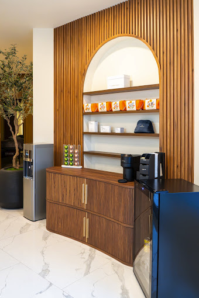
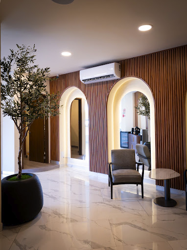
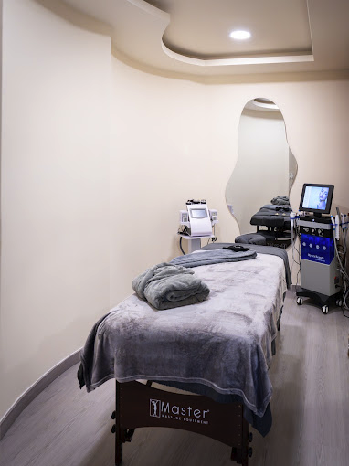

Tu cuerpo también necesita bajar el ritmo.

Servicios
Servicios y tarifas
Cada servicio se realiza en cabina privada, con ropa de cama limpia y la duración completa que indica tu reserva.
El lugar
Un espacio creado para consentirte
Recepción con área de espera, café y agua de cortesía, y cabinas privadas para cada servicio.


Reserva
Elige tu horario
Los horarios disponibles son los que aparecen en el calendario. La confirmación llega por correo.
No pudimos cargar el calendario en este momento.
Agendar por WhatsApp¿Dudas antes de reservar? Escríbenos por WhatsApp
Preguntas frecuentes
Antes de tu cita
Ubicación y horarios